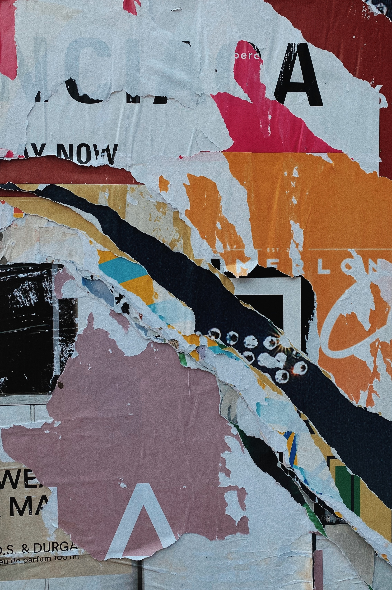
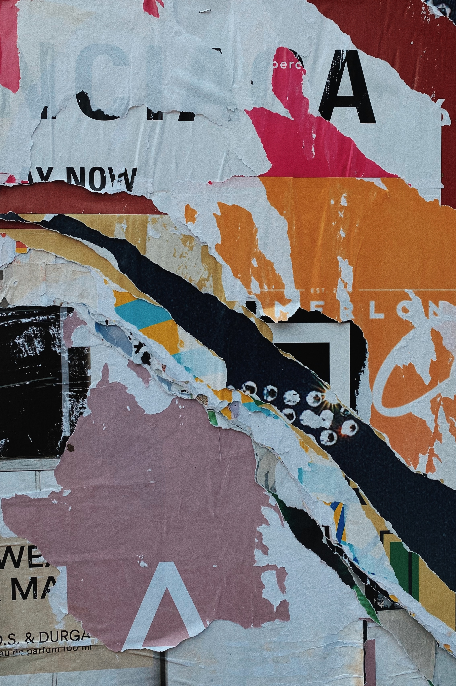
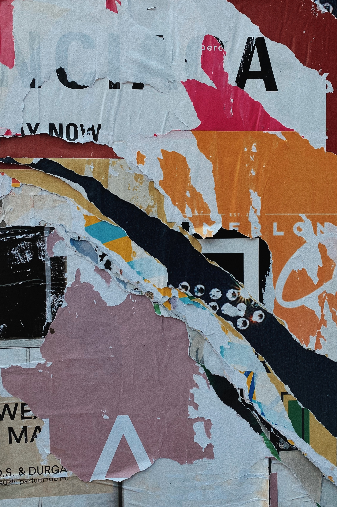

Galeria de Grafites
Aqui estão algumas imagens de grafites impressionantes que capturam a essência da cultura urbana:

 

A cultura urbana é uma parte essencial da vida nas grandes cidades. Ela abrange diversos aspectos, incluindo música, arte, dança e muito mais. Neste site, vamos explorar a expressão artística dos grafites e sua importância na cultura urbana.
Aqui estão algumas imagens de grafites impressionantes que capturam a essência da cultura urbana:

Entre em contato conosco pelo e-mail: contato@culturaurbana.com